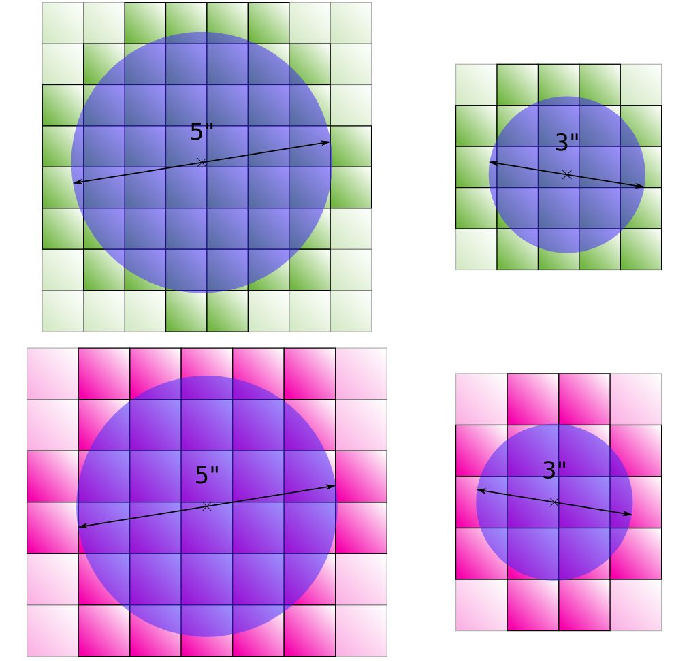
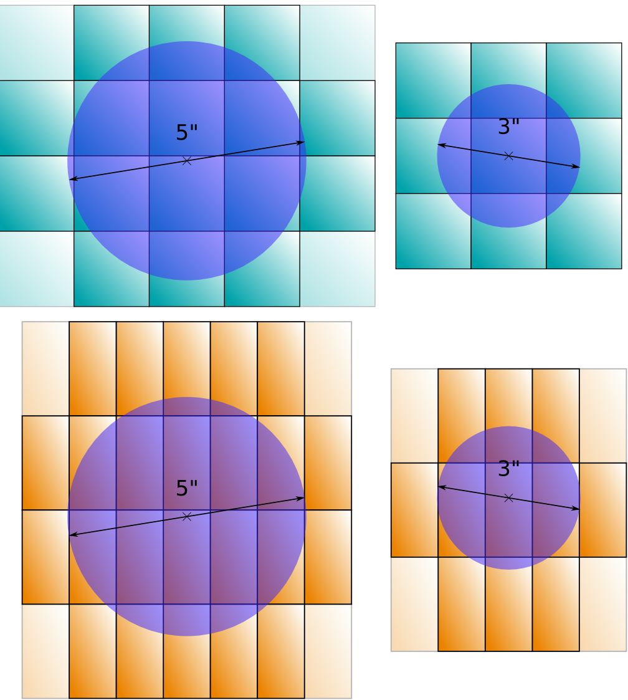
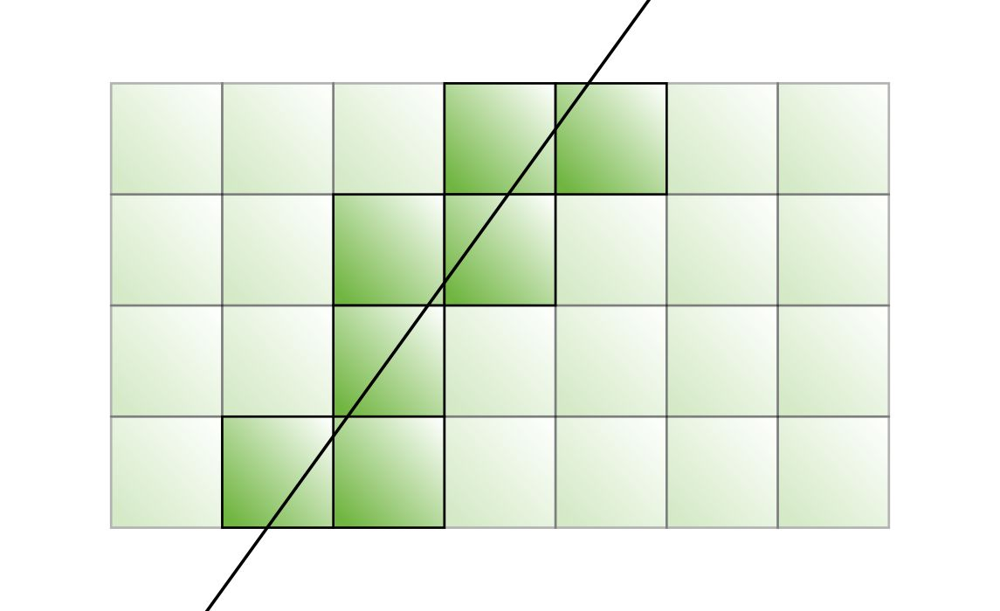

General Principles
Turn
Fantasy Battles: The 9th Age is a turn based game. A standard game lasts for 6 Game Turns. One player has the first turn (called a Player Turn), in which they use their units to move and attack. After this, the other player has their first Player Turn. When this comes to an end, Game Turn 1 is completed. In Game Turn 2, the first player now has their second Player Turn, and so on, until both players have completed 6 Player Turns. This marks the end of the game.
Active and Reactive Player
The Active Player is the player whose turn it currently is.
The Reactive Player is the player whose turn it currently is not.
Simultaneous Effects
Whenever two or more effects happen at the same time, and the order matters, resolve effects controlled by the
Active Player first. Each player is free to decide in which order their own simultaneous abilities resolve. If there is a choice involved (such as abilities that may or may not be activated), the
Active Player must declare the usage of their abilities before the
Reactive Player. Once both players have declared the usage of their abilities, the effects of the abilities are resolved, starting with the ones of the
Active Player. For example, if both players have abilities that may be activated at the beginning of the
Magic Phase, the player whose
Magic Phase it is must choose first if they are using their abilities or not. Then the
Reactive Player can choose if they are using their abilities or not. After this, the effects of the abilities from both sides are resolved, starting with the
Active Player's abilities.
Dice
Rolling Dice
In Fantasy Battles: The 9th Age, dice are often used to determine random outcomes. The most commonly used type is the six-sided dice, named "D6", with a range from 1 to 6. The effects of a dice roll are often depending on whether the rolled value is equal to or higher than a set value (such as a dice roll that is successful if the dice rolls ‘3’ or higher). This is often referred to as a “3+” (or 2+, 4+, 6+, etc.). Sometimes, you are called upon to roll more than one of these dice at the same time. This is represented by a number before the type of dice rolled, such as “3D6”, which means to roll 3 six-sided dice and add the results together. On other occasions, a dice roll may be modified by adding or subtracting a number, such as D6+1. In such cases, simply add the relevant number to or subtract it from the result of the roll. Lastly,
some effects in the game call for rerolling certain dice, such as “failed to-wound rolls”, or “Ward Save results of '1'”. When you encounter such situations, reroll the relevant dice.
Dice can only be rerolled once
. The second result is final, no matter the cause/source or result.
The game sometimes requires to roll a D3. This is performed by rolling a D6 and then halving the result, rounding up, so that the result can only end up being 1, 2 or 3. If the game requires a natural ‘1’ or a natural ‘6’ when rolling D3, it always refers to the value of the D6 before halving.
The Scatter Dice
The Scatter Dice is a special six-sided dice with two sides marked with "Hit" and four sides marked with an arrow. This dice is typically used in a situation where a projectile or spell effect comes with a risk of deviating in a random direction.
Scatter
When you are called upon to Scatter an object (for example " Scatter a Template D6” " ), roll the Scatter Dice. If a “Hit” symbol is rolled, do not move the object. If an arrow is rolled then roll the specified deviation distance (D6 in this case) and move the object by that number of inches in the direction pointed by the Scatter Dice. Note that this is not the same thing as randomizing a direction.
Representing the Scatter Dice with a standard D6
Alternatively a
Scatter Dice can be represented by rolling a standard six-sided dice and using the side with a single dot to represent the direction of an arrow as depicted on
Figure 2. Rolling a result of ‘1’ or ‘6’ is considered a "Hit" with no deviation. Since ‘1’ and ‘6’ are on opposite faces on a standard dice, any result other than ‘1’ or ‘6’ can be interpreted as an arrow.
Random Direction
Certain rules may ask the player to determine a random direction. In such cases, roll the Scatter Dice until an arrow is rolled and then use the direction in which it points. Ignore any “Hit” result; in this special case you are allowed to reroll an already rerolled dice. Some Scatter Dice feature a small arrow within the “Hit” symbol. If that is the case you do not need to reroll “Hit” results, simply use the small arrow to determine the direction.
Templates
Templates are used to determine areas of effect. There are several different types and sizes of Templates. The most commonly used Templates are 3” and 5” Templates. These are diskshaped Templates with a 3” and 5” diameter respectively. Other less commonly used Templates include the 1” round Template (called 1” Template) and the Line Template (used for Cannons and some spells). When determining how many
models are beneath (or touched by) the
Template, hold the appropriate
Template over the target to see which model
bases are directly underneath it. If any part of a
model’s
base is beneath a
Template (however small that part is), that
model counts as being under the
Template. Any given point on a
Template can only ever be in contact with one
base. The
model bases are based on the metric system, while the
Template sizes are in inches. This means, for example, that a
3” Template is capable of touching the bases of 5 lined up models with 25mm bases (3” = 7.62cm).
Template Hits
This diagram shows the maximum number of
models that can be hit for each
template size. Green bases are 20x20mm, magenta bases are 25x25mm, cyan bases are 40x40mm and orange bases are 25x50mm.

Line Template
A Line Template is a straight line drawn between two points. All models underneath this line are considered under the Template.
Alternatively, the number of
models hit by a
Line Template can be determined by adding up the number of ranks and the number of files of the formation that are touched by the line, and subtract one.

Battlefield Logistics
Measuring Distances
The measuring unit in Fantasy Battles: The 9th Age, is the inch ("). An inch corresponds to 2.54 cm. All distances and ranges are indicated and measured in inches. To determine the distance between two points on the Battlefield (or two
units, or any other elements), you must always measure from the closest points, even if the line of measuring goes through any kind of intervening or obstructing element. Ignore such obstructions for the purposes of measurement.
The rules often refer to things being within a certain distance. Measure the distance between the closest points. If this distance is less than the given range, they are considered to be within range. This means that a model is always within range of itself and that the entire model/unit does not need to be within range, only a fraction of it.
Players are always allowed to measure any distance at any time.
Unit Spacing
All units must under normal circumstances be separated by more than 1” from any other units (friends or foes) and from Impassable Terrain. A unit may come within 1⁄2” of these elements during the course of a move but must be kept more than 1” away once the move ends. Certain forms of movement are specifically allowed to break this spacing rule, with the best example being a charge which allows a unit to engage enemies in Close Combat.
Other types of moves may allow a
unit to come closer than 1” to friendly units or
Impassable Terrain but only a charge allows direct contact with enemy
units. If a unit is allowed to temporarily break the spacing rule for one reason or another, it ignores the
Unit Spacing rule with regards to the unit or
Impassable Terrain that it is closer than 1” to, for as long as it remains closer than 1” to this (it may however still not move into
base contact with an enemy
unit without charging it). Once the
units are separated by more than 1”, the
Unit Spacing rule automatically begins to apply again.
Board Edge
The
board edge represents the boundaries of the game.
Models can move temporarily outside the
board edge on the condition that no more than 50% of any
model's
Footprint is outside the board and as long as the move does not end with any part of the
model outside the board.
Templates can be partially outside the board and still affect
models with the parts of the
Template that are still on the board.
Setting up a Game
Building an Army
Fantasy Battles: The 9th Age includes a series of Army Books which contain descriptions of the different armies. Each army has unique
characters, troops and rules.
Characters are divided into
Lords and
Heroes. Troops are divided into
Core,
Special and
Rare.
The first step to building an army is to write down a selection of units, options and their Point Costs on a document, called the “Army List”. The exact composition of an army is subject to certain rules and restrictions which the following chapter will describe in detail.
Army Restrictions
An army in Fantasy Battles: The 9th Age is subject to basic composition rules:
-
Army Points
The combined points value of every unit in the army, including options and equipment, must not exceed the determined point limit for the battle. An army may fall below the limit only by 20 points or less.
-
Unit Categories
All units are separated into five Categories. The number of points one can spend on these Categories differs. Additionally the same unit can only be taken a limited number of times.
Under some special conditions units can be moved from one Category to another. For example, in some cases the rules say it is allowed to take Chariots as Core choice instead of Special choice. In such cases the unit must abide by both the duplicate limit from its former Category and its new one, but the points limit is only taken from the new Category. I.e. you may not include more than 3 Chariots, but the Chariots will count towards the needed 25% of points in Core.
-
Minimum Army Size
Every army must contain a minimum of 4 units excluding the Characters. For this purpose, all units with the War Machine Troop Type count together as one.
-
The General
One Character in the army must be named the General. Therefore there must be at least one Hero or Lord included in the army who is eligible to fulfil this role. An Army can only have one General.
-
One of a Kind and One per Army
Units, upgrades and items marked as “One of a Kind” and “One per Army” may only be taken once per army. “One of a Kind” can be taken twice per Grand Army.
-
0-X Choice
Some units are marked with “0-X Choices” (for example “0-2 Choice”). This means that such units can be taken from zero to X times, and ignore the normal duplication limits. The maximum limit (X) is halved for Warbands and doubled for Grand Armies, rounds fractions up.
Warbands and Grand Armies
The rules for army composition are modified depending on the size of an army. An army that is unusually small or unusually large is subject to the following rules.
Warbands
Armies of 1500 points or less are called Warbands. The minimum army size is decreased to 3 units.
Warband Duplicate Limit
Grand Armies
Armies of 4000 points and more are called Grand Armies. Units which are marked as One of a Kind can be taken up to 2 times.
Grand Armies Duplicate Limit
Hidden or Open Lists ?
Rules are written and balanced based on the principle of openness, i.e. your opponent knows what
Magical Items your
models are equipped with. We encourage players to share their full
Army Lists with their opponents at the start of the game. This
Army List should include all
units, unit options,
Magical Items, special abilities,
point costs and so on. The only things that are not open to your opponent are things that are explicitly stated as hidden or secret (such as in which unit an assassin is hiding). Note that the presence of an assassin in the army (and its equipment) is still open.
Optional Rules for Hidden Lists
Some players may prefer to use so-called hidden lists. For such players, we include the hidden list rules. Please note that the game is not balanced with these rules in mind. In this format, most of your army roster will be open (meaning that your opponent should know what your army consists of before the game starts). However, some parts of your army are secret or “hidden”. Both players should provide their opponent with the open part of their army (a “mundane Army List”) before the game begins.
The following is included in the hidden part of your army.
-
Magical Items that are picked from the common list of Magical Items.
-
Magical Items that are specific to Army Books, as well as any option that follows the rules for Magical Items such as Daemonic Items and Dwarven Runes.
Anything not on that list belongs to the open part of the
Army List. In addition, all
Magical Items (and similar) that have a mundane part should be presented with the open part of your army (such as a
Magical Weapon's or
Magical Armour's
type).
If an army has two or more
units or
models that are identical regarding their open part but have hidden differences, the player must be able to tell the
units apart in the hidden list. For example if a player fields two units identical in every way except that one has a
Magical Standard and the other doesn’t, the
Army List may specify that the
unit with the
Magical Standard has a red banner while the unit with a blue banner possesses no such
Magical Item.
Revealing Magical Items
A
Magical Item (or similar) must be revealed the first time it is used. An item is considered being used when it affects or could affect the game in any way. For example:
-
It affects a dice roll (even if the actual result of the dice has no effect).
-
It alters an attack (such as a Magical Weapon, or any item with a special rule that affects an attack).
-
It alters a saving throw (reveal the item before rolling the saving throw). Note that an item that affects the save the same way as the mundane counterpart would (such as many magical shields) does not need to be revealed.
An item that increases
movement only counts as being used if the
unit moves further than it could without it or when
charging (declare that you have the item before rolling the
charge distance but after
reactions are taken). When revealing
Dwarven Runic Items, only reveal the
rune that is being used, not the entire combined item.
The Pre-Game Sequence
There are several steps that players must go through in order to set up a game of Fantasy Battles: The 9th Age. These steps are referred to as the
pre-game sequence. The first and foremost step is to find a suitable opponent and agree on the size of the game. The players may then
share their Army Lists and begin
building the Battlefield, followed by
picking the deployment type, choosing the
Secondary Objectives of the game, determining
Deployment Zones and
generating Wizard spells. The last step will consist of going through what is called the
Deployment.
Before the game can begin, some preparations have to be made.
-
Decide on Game Size.
-
Share Army List with Opponent.
-
Build the Battlefield.
-
Pick Deployment Type.
-
Choose Secondary Objectives.
-
Determine Deployment Zones.
-
Generate Spells.
-
Deployment Phase.
The Size of the Game
In Fantasy Battles: The 9th Age, two armies opposing each other on the battlefield must have roughly the same point cost. This ensures that the battle will be decided through the clever strategies and tactics of the players rather than by an unfair difference in army size. The first step to setting up a game is to agree on the total point cost of the army that each player will bring. This predetermined point cost will henceforth correspond to the size of the game. Armies are typically worth between 500 and 1000 points for small engagements, between 1000 and 2000 points for serious battles and beyond 2000 points for mighty clashes between epic armies.
Sharing Army Lists
After deciding the
size of the game, the next step is for both players to swap
Army Lists and share all relevant information about the upcoming game.
Alternatively, the players may agree to keep certain aspects about their armies secret, which they will progressively reveal during the course of the game. For more information please see the
section on Hidden Lists.
Building the Battlefield
A game of Fantasy Battles: The 9th Age is played on a board that is 72” wide and 48” deep. For smaller battles involving Warbands, it is recommended to use a board that is 36” wide and 48” deep, while for bigger games involving Grand Armies it is recommended to adjust the size depending on the size of the armies. While some battles may take place on a completely flat board, a Battlefield typically has Terrain Features placed upon it.
The players can freely agree on the size, type and number of
Terrain Features to be placed, as well as their positions. If an agreement cannot be reached, the game provides the following default rules for setting up a randomly generated
Battlefield.
-
First, divide the gaming board into 24”x24” sections (18”x24” if the board is 36”x48”).
-
Place the following Terrain Features in the centre of a randomly selected section (max 1 piece in each section):
Then move each Terrain piece 2D6” in a random direction.
-
Next,add 2D3 (1D3 if the board is 36”x48”) additional pieces of Terrain following the rules above to determine their position. Roll a D6 and consult the table below to determine the type of each additional Terrain Feature.
-
Hill
-
Forest
-
Field
-
Water
-
Wall
-
Ruin
-
All Terrain Features must be placed at least 6” away from each other. You may move the pieces as little as possible from their rolled position in order to meet this criterion. If it is not possible to place the Terrain piece more than 6” away from any other Terrain then discard the problematic piece.
-
Recommended Terrain piece sizes are between 6”x8” and 6”x10” except for Walls which are 1”x10”.
Deployment Type
Players may agree on which deployment type to use or may want to randomize this variable by rolling a D6 and consulting the following table.
|
The Table is divided into halves by the straight line through the centre of the board, parallel to the table's long edges. Deployment Zones are areas more than 12" away from this line.
|
The Table is divided into halves by a diagonal line across the table. Whoever gets to choose the Deployment Zone decides which diagonal to use. Deployment Zones are areas more than 9” away from this line.
|
The Table is divided into halves by drawing a straight line through the centre of the board, parallel to the table's long edges. The player who gets to choose the Deployment Zone decides if they want to be the attacker or the defender. The attacker may deploy more than 9" from the central line if within 1⁄4 of the table's length from either table edge (18" on a 72” table), and more than 15" from the central line elsewhere. The defender does the opposite: more than 15" away from the central line if within 1⁄4 of the table's length from the table’s short edges, and more than 9" away from the central line elsewhere.
|
Secondary Objectives
Before picking Deployment Zones, the players can agree to pick one or more Secondary Objectives (if any at all), or they can randomly choose by rolling a D6 and consulting the table below.
Hold the Ground
Secure and hold the Battlefield centre. Place a marker to show the centre of the Board if needed.
Deployment Phase
Determine Who Deploys First
The player who did not choose the
Deployment Zone decides which player deploys first.
Other Rules And Abilities
Put into effect all remaining rules and abilities described as taking place right before the battle.
Roll For First Turn
Both players must now roll a D6. The player that finished deploying first adds the “
Undeployed Units Number” score to their dice roll.
-
If the player who finished deploying first gets a higher result, they play first or second as was previously announced.
-
If the score is a tie or the player who finished deploying second wins, they can now choose which player has the first turn.